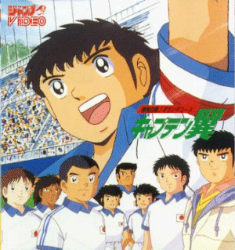

Captain Tsubasa

Useful Links
Anime Web Turnpike: Captain Tsubasa Links
(you have to scroll down a bit)
Gameboy Games
Captain Tsubasa J: Zengoku Seiha he no Chousen
Captain Tsubasa VS
Nintendo Games
Captain Tsubasa Part 1
Captain Tsubasa Part 2 Super Striker
SNES Games
Captain Tsubasa Part 3: Challenge of Kaiser
Captain Tsubasa Part 4: Pro's Rivals
Captain Tsubasa Part 5
Captain Tsubasa J: The Way to World Youth
Anime Video Game Resource Center © 1998 by
Luis A. Cruz